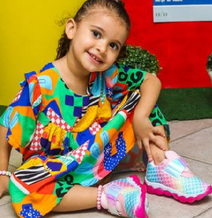
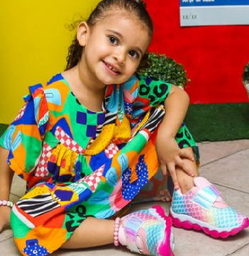
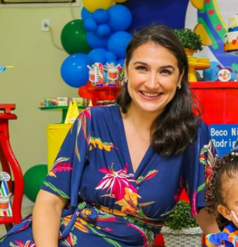
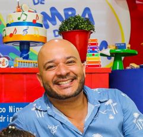

" Sou estudante, e assim como meus pais, me apaixonei pela área de Desenvolvimento Web. Pretendo me tornar Fullstack no futuro e contar com a ajuda da experiência deles. Trabalhar de casa é maravilhoso! Ahhh, adoro estudar e evoluir! "
Nina Rodrigues
Desenvolvedora Frontend Junior

" Sou uma UX/UI designer e amo meu trabalho! Mãe, esposa e filha... sigo equilibrando todos os assuntos para uma constante evolução pessoal e em família. Para boa remuneração e qualidade de vida, indico a área de Desenvolvimento Web. "
Monique Braga
Desenvolvedora - UX/UI

" Sou Desenvolvedor Frontend Senior, tenho 5 anos de experiência na área. Trabalhar de casa era o meu sonho, mas com uma boa remuneração. Sonho realizado! Fico perto da minha família e no conforto da minha casa. Não quero outra vida! "
Roni Rodrigues
Desenvolvedor Frontend Sênior